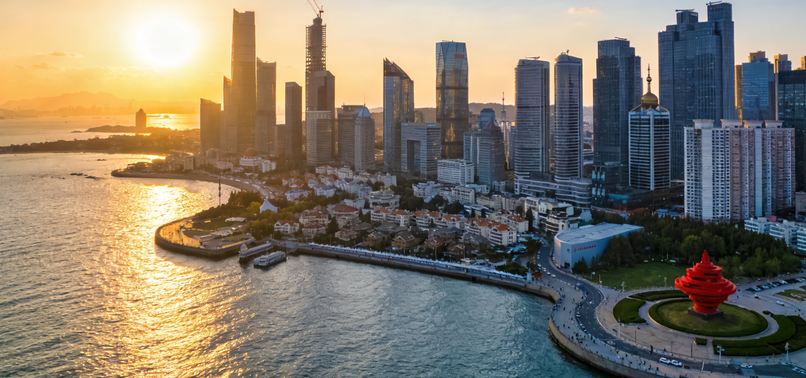
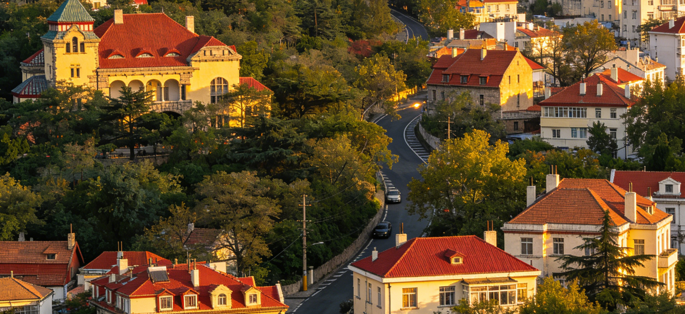

Iconic Landmarks
The must-see attractions that define Qingdao

Zhanqiao Pier
The most famous landmark of Qingdao, this 440-meter-long pier extends into Qingdao Bay. Built in 1892, its octagonal Huilan Pavilion at the tip has appeared on countless postcards and is considered the symbol of the city.

Mount Lao (Laoshan)
Known as the "most famous mountain on the sea," Laoshan rises 1,133 meters above the coastline. It is one of the birthplaces of Taoism and offers breathtaking views of mountains meeting the Yellow Sea.

Badaguan Scenic Area
Eight historic avenues lined with hundreds of villas in over 20 architectural styles including Russian, German, Japanese, and Greek. Each street is planted with a different flowering tree, creating seasonal color explosions.